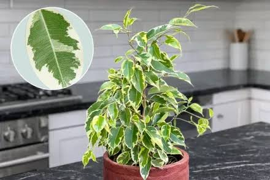
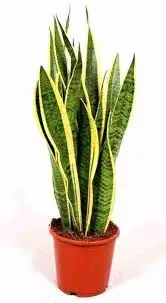

Каталог кімнатних рослин
Персональна сторінка про кімнатні рослини, їхні особливості та правильний догляд.
Про мене
Мене звати Ярослав. Я студент, який цікавиться сучасними вебтехнологіями, програмуванням та дизайном вебсторінок.
Одним із моїх захоплень є кімнатні рослини. Мені подобається спостерігати за їхнім ростом та дізнаватися про правильний догляд за ними.
Мої інтереси
Веброзробка
Програмування
Дизайн
Догляд за кімнатними рослинами
Мої рослини
Вимоги до світла: розсіяне світлоЧастота поливу: кожні 7 днівМаксимальна висота: до 3 метрівБезпечна для тварин: ні
Монстеру потрібно розміщувати у світлому місці без тривалого впливу прямих сонячних променів. Поливати рослину потрібно після підсихання верхнього шару ґрунту. Також бажано періодично протирати листя від пилу.

Вимоги до світла: яскраве розсіяне світлоЧастота поливу: кожні 7–10 днівМаксимальна висота: до 2 метрівБезпечна для тварин: ні
Фікус не любить протягів і частих переміщень. Після зміни місця він може скинути частину листя, тому краще одразу обрати для нього постійне світле місце.

Вимоги до світла: від півтіні до яскравого світлаЧастота поливу: кожні 14 днівМаксимальна висота: до 1 метраБезпечна для тварин: ні
Одна з найневибагливіших рослин. Добре переносить пересихання ґрунту, а от надлишок води шкодить їй більше, ніж нестача.
Цікаві факти
Факт про рослини
Кімнатні рослини можуть покращувати зовнішній вигляд приміщення та створювати більш комфортну атмосферу.
Моя мета
У майбутньому я хочу створити власний каталог кімнатних рослин із пошуком, фільтрацією та можливістю додавання нових рослин.
Додаткова інформація
Правильний догляд за рослиною залежить від освітлення, температури, вологості та режиму поливу.
«Рослини роблять простір живим».